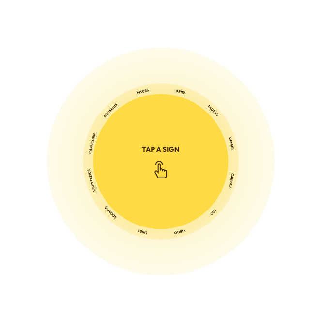

<div class="astro-dictionary d-flex flex-column">
  <div class="d-flex flex-column astro-container">
    <span class="astro-text">Explore zodiac sign and how they influence.</span>
    <span class="astro-para mt-3"
      >Discover how to harmonize your life with the cosmos by utilizing an
      astrological dictionary. This resource will guide you in understanding the
      celestial influences.</span
    >
  </div>

  <div class="d-flex astro-image justify-content-center">
    
    <div class="icon-container">
      <ng-container *ngFor="let zodiac of zodiacSigns" class="zodiac-wrapper">
        
      </ng-container>
    </div>
  </div>

  <div class="profile-container d-flex flex-column">
    <span class="zodiac-text">{{ this.activeZodiac }}</span>
    <span class="zodiac-desc mt-2" [innerHTML]="this.zodiacDesc"></span>
  </div>
</div>
